曼谷 · 芭提雅 8天7晚
点日期跳转，点卡片展开详情
国际航班建议提前 2 小时到机场值机。三人从各自位置出发，约好 15:00 在值机柜台集合。把护照、行程单、酒店预订单放随身包里，值机+托运+安检+出境，从容走完留 40 分钟逛免税店。
航班起飞，飞行约 4.5 小时。机上吃顿航餐、补个觉。⚠️ 落地已是泰国晚上，别熬太狠。
落地后：① 过边检（免签，拿护照即可）② 取行李 ③ 激活泰国电话卡（提前淘宝买的 Happy/AIS 卡，插卡即用）④ 换一点泰铢现钞（机场汇率一般，先换 1000-2000 泰铢应急）。全程约 40-60 分钟。
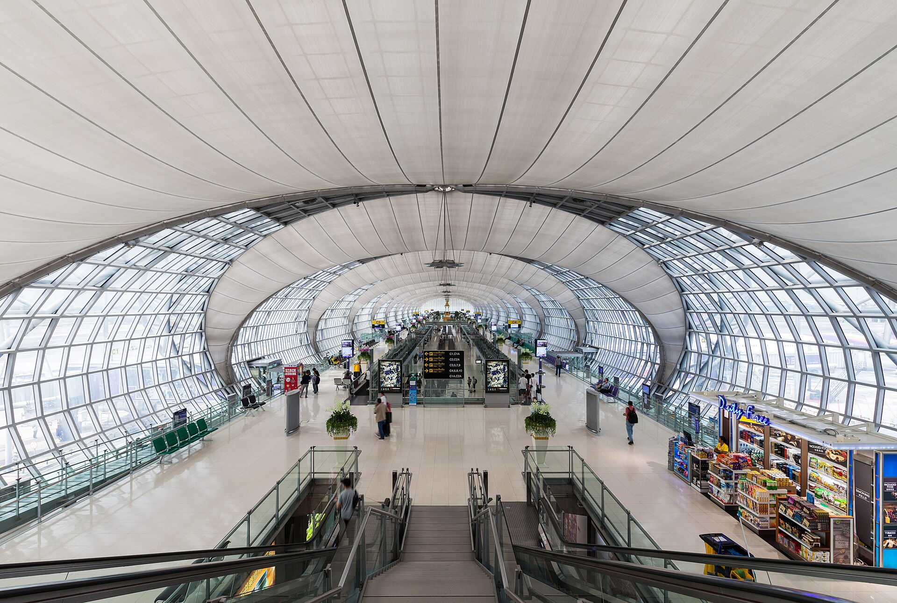
三位男生+行李，直接 Grab 叫一辆大车（约 450-550 泰铢）直达酒店，比机场快线换 BTS 省事得多。目的地：Grande Centre Point Ratchadamri。
办入住、放行李、简单洗漱。酒店就在 CentralWorld/四面佛旁边，楼下走几步就有夜市摊和小吃。落地第一顿吃点清淡的——泰式米粉汤、烤串，配杯泰式奶茶，别一上来就搞重口。吃完早点休息，明天正式开始。
⚠️ 酒店不含早餐。今天上午暴走大皇宫，建议吃顿抗饿的：
出门前涂防晒，穿长裤/过膝裙+有袖上衣（进大皇宫硬性要求）。
Grab 打车去大皇宫（约 120-150 泰铢）。8:30 开门就冲，趁上午还没那么热、旅行团没到。
曼谷头号地标，门票 500 泰铢。玉佛寺金碧辉煌，跟着人流走主线，重点看玉佛殿和节基殿。⚠️ 别碰僧侣、别用脚指佛像。
从大皇宫出来步行约 8 分钟到卧佛寺（门票 200 泰铢），看 46 米巨型卧佛，脚底板镶满珍珠母贝。
从卧佛寺步行 3 分钟到 Tha Tian 码头，5 泰铢渡轮横跨湄南河到郑王庙（门票 100 泰铢）。白色塔身嵌满彩色瓷片，爬到塔身中层俯瞰河景——上午光线拍出来最干净。
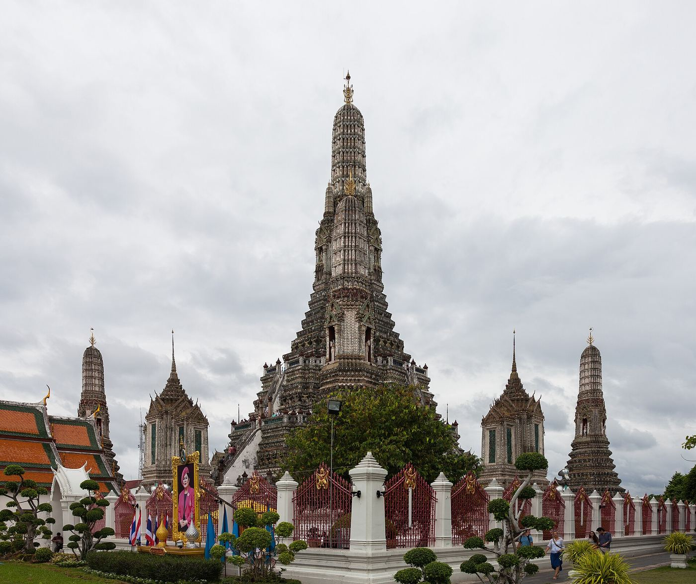
逛完郑王庙，在码头坐 ICONSIAM 的免费接驳船（约 10 分钟）过河到暹罗天地。10 月正午 33°C，正好躲进空调商场避暑。
负一楼 SookSiam 室内水上市场，全泰各地小吃汇集，有空调！泰式船面、芒果糯米饭、烤猪肉串，人均 200-300 泰铢。吃完在商场里消食看河景。
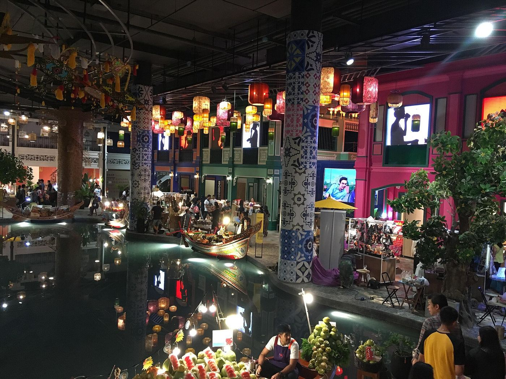
ICONSIAM 出来 Grab 去 Health Land Sathorn（曼谷最大按摩连锁，N Sathon Rd，近 BTS Chong Nonsi）。建议提前电话/Line 预约，否则黄金时段可能等位。上午暴走 3 小时，正好回血。
传统泰式按摩 2 小时约 600-700 泰铢，性价比之王。三人一起按，16:30 前结束，无缝衔接像素大楼看日落。不习惯泰式就换精油按摩（约 1,000 泰铢）。
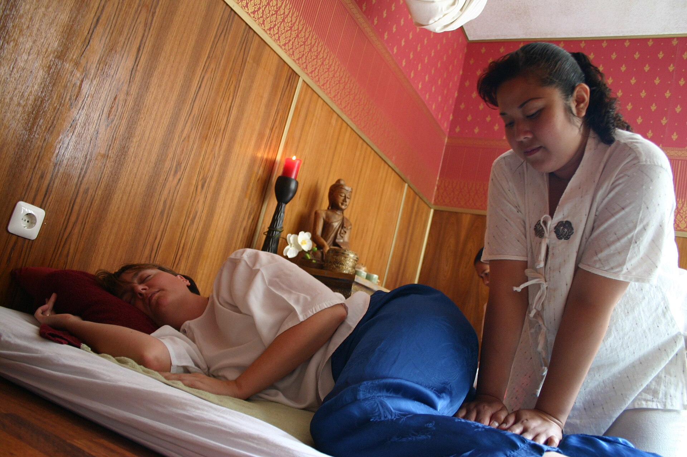
Grab 前往 Mahanakhon 大楼。门票 Klook 提前买约 170 人民币/人，免排队。
314 米玻璃栈道悬在曼谷天际线上，夕阳从高楼缝隙沉下去。三个人互相壮胆站上透明玻璃拍照。
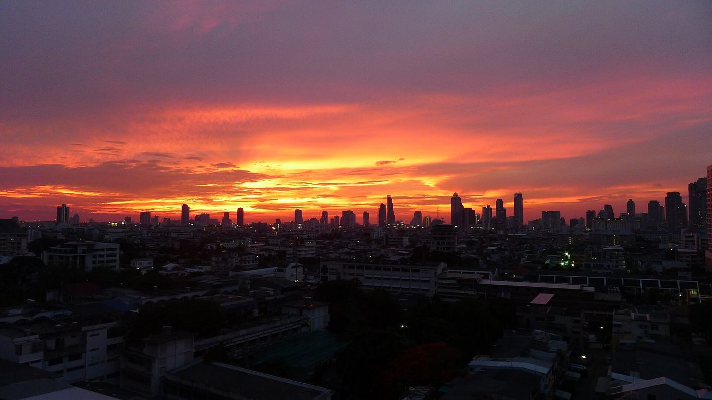
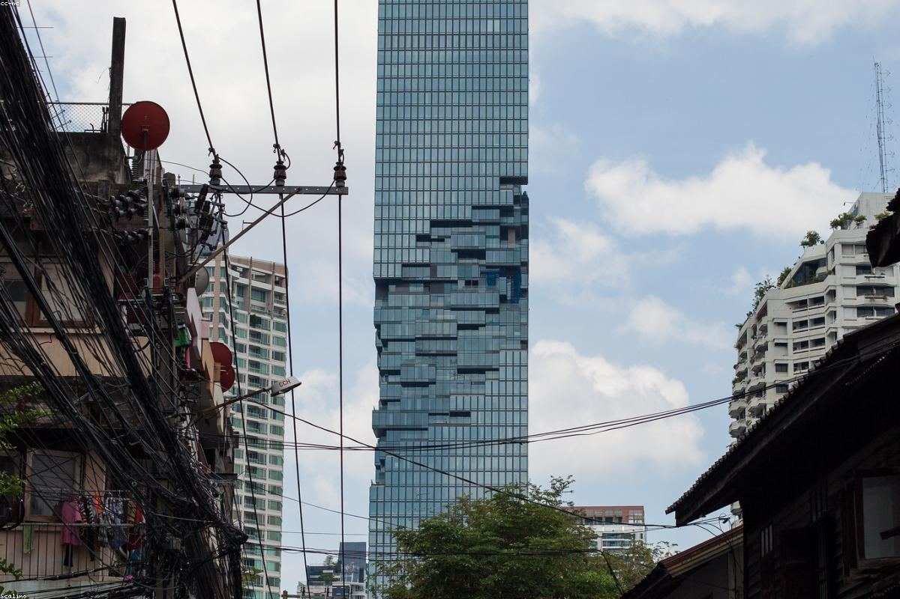
从像素大楼步行/Grab 约 10 分钟到 Silom Soi Convent（近 BTS Sala Daeng）——曼谷白领下班食堂一条街，午市 11:00 起、晚市 17:00 起。必吃泰式东北菜三件套 + 冬阴功：泰式烤鸡（Gai Yang）、凉拌木瓜沙拉（Som Tum）、碳烤猪颈肉（Kor Moo Yang）、冬阴功汤（Tom Yum Goong）。街上名店：Hai Som Tam Convent（专营宋丹，4.2 分/千余评价）、Khao-Sō-i（泰式创意菜，4.8 分）。三人点一桌人均 200-400 泰铢。
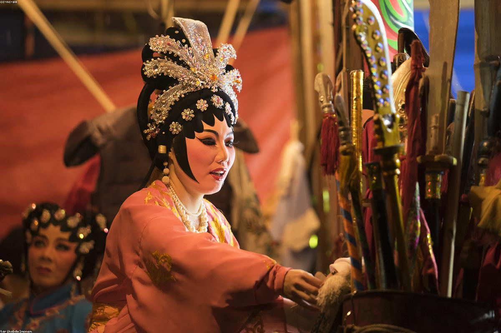
吃完排档 Grab 回酒店（约 15 分钟）。今天运动量不小，早点休息，明天恰图恰+泰拳+天台，还要继续拼。
昨天走累了，今天睡到自然醒。酒店不含早餐，几个选择：
从 Ratchadamri 站坐 BTS（Silom 线转 Sukhumvit 线）到 Mo Chit 站，跟人流走 5 分钟就是入口。今天恰逢周六——亚洲最大周末市场开市！
15000 个摊位，大到 GPS 都没用。三人分工：一人找吃、一人砍价、一人挑货。必买：泰国本土潮牌 T 恤（150-300 泰铢）、手工皮具、泰拳短裤、复古太阳镜。市场内椰子冰淇淋、烤猪肉串随走随吃。⚠️ 中午最热，逛到 14:30 收工回酒店回血。
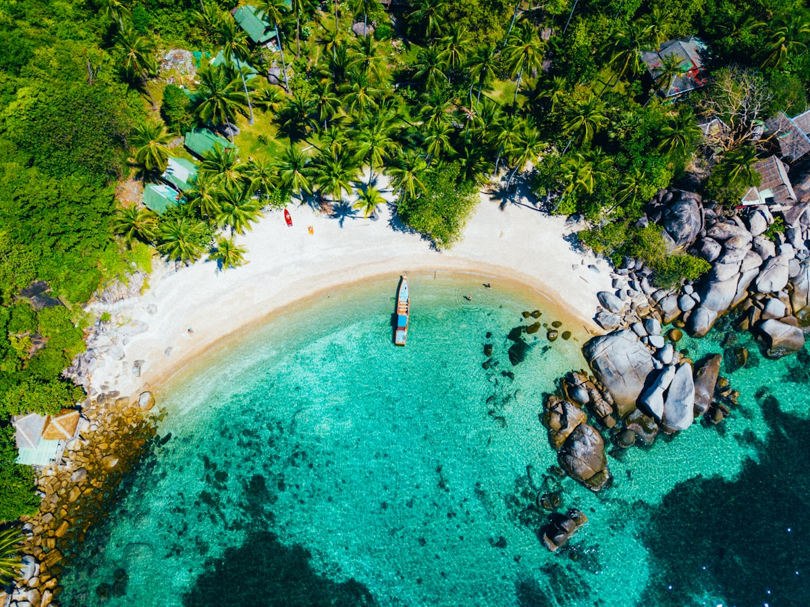
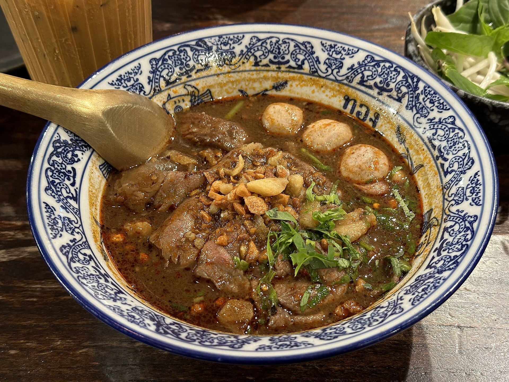
BTS 原路返回。逛完一身汗，回酒店冲澡。
冲个澡、换身衣服，躺床上或泡酒店泳池半小时。这段休息是今天的关键——不休息晚上泰拳+天台会撑不住。
Grab 前往 Rajadamnern Stadium（老城区考山路附近）。门票建议 Klook 提前订，一等座 2000 泰铢/人。
曼谷最老牌拳场，每周六顶级赛事，18:00 开始约 8-9 场。现场赌注声、助威嘶吼、骨肉撞击声，比电视震撼 10 倍。二等座 1500 泰铢就能看很清楚。
泰拳散场后 Grab 去素坤逸的天台酒吧。
推荐 Octave Rooftop（素坤逸万豪酒店：45 楼是 Lounge & Bar 可吃饭，48 楼 Sky Bar 有 DJ，360 度无遮挡，鸡尾酒约 490 泰铢+服务费，有着装要求，勿穿短裤拖鞋）或 Tichuca Rooftop Bar（巨型 LED 水母树，T-One 大楼 46 楼，人均约 400-600 泰铢，需带护照入场，日落时段常排队）。三人点一轮酒，俯瞰曼谷夜景。
楼下素坤逸 Soi 38 深夜路边摊来碗泰式打抛饭（人均 60-100 泰铢），然后 Grab 回酒店休息。明天要换城市去芭提雅，别熬太晚。
今天换城市去芭提雅。酒店不含早餐，楼下 7-11/路边摊（或水门市场红大哥鸡饭，若前两天没吃上）解决，打包行李、办理退房。退房时把不用的厚衣物塞行李箱。
三人包一辆车（SUV/轿车约 1500-2500 泰铢/车，3 人分摊人均约 100-170 元人民币），酒店接送、门对门，比大巴舒服。车上补个觉或刷手机。
📌 包车怎么找（防坑要点）：优先 Klook/KKday 提前订（人民币直付、含高速费、有客服），或 Grab 现场叫（价锁定、最防宰）。别坐机场/路边拉客的车（开价 2-3 倍），别用突突车跑长途。上车前问清：按车不按人、含高速费、点到点接送、有无等时费。详见下方「包车与打车防坑」板块。
办理入住、放行李。海滨路北段面海，先到房间把泳装、防晒拿出来，换上清凉装扮。
酒店周边 Beach Road 沿路都是餐厅，挑一家面海的吃简餐：泰式炒粉、菠萝饭配冰椰子。人均 150-250 泰铢。
从酒店坐双条车/Grab 约 10 分钟到真理寺（门票 500 泰铢）。全木雕刻海边神殿，整栋建筑没有一颗钉子，高 105 米面朝大海，精雕细琢震撼。⚠️ 有小段施工区，按要求戴安全帽。
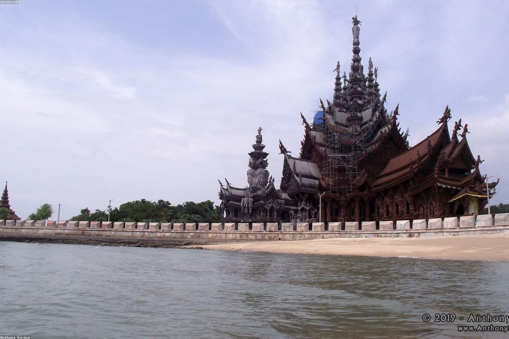
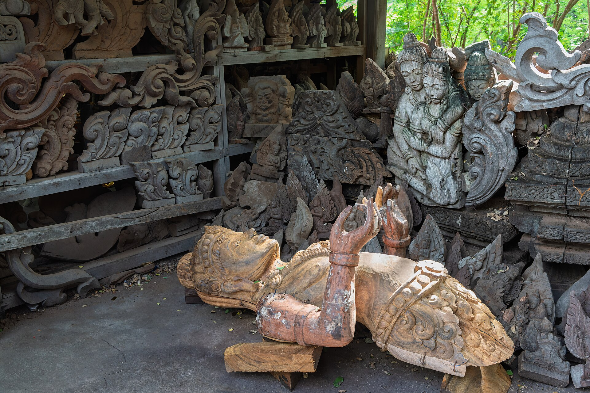
回酒店冲个澡、换身晚上看日落的衣服。想游泳的去泳池泡一下。
Grab 去 The Sky Gallery 悬崖餐厅（芭提雅最经典的看日落餐厅，位于帕塔纳克山）。一定提前一天订 17:00 的看海落日位——建议通过 Line 官方号（lin.ee/jRQusxY）预订，靠海位置很抢手。
悬崖上吃海鲜大餐看天边渐变色，人均 400-700 泰铢。10 月日落约 18:00，吃完刚好看完整个落日过程。
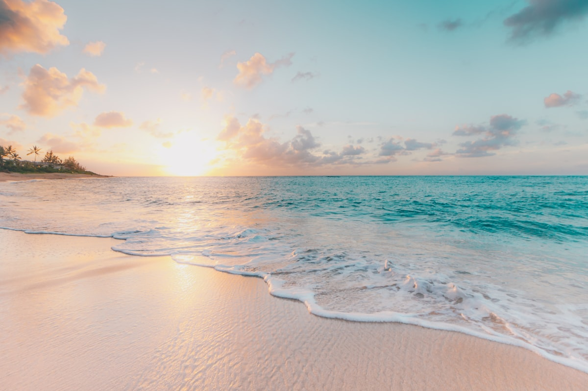
Grab 去芭提雅步行街南端入口。
芭提雅 500 米核心夜生活区，霓虹密度全球数一数二。三人先沿街走一两个来回感受氛围，再选一家现场乐队酒吧——推荐 Hot Tuna Bar（摇滚现场，营业至凌晨 03:30）或 Lucifer Entertainment（步行街工业风夜店，通宵营业）。路上拉客的多，不想去就微笑说 "No thanks"。啤酒 80-130 泰铢/瓶。
今天要去格兰岛，早点起。酒店不含早餐，附近这样解决：
涂好防晒（海边当天要补涂 2-3 次），带好泳裤、防水袋、相机。行李放酒店，只带随身小包。
从 Holiday Inn 到 Bali Hai 码头坐双条车（10 泰铢/人）或 Grab。赶 09:00 的轮渡。
Bali Hai 码头轮渡 30 泰铢/人。三人也可以包快艇（2000-3000 泰铢/船，20 分钟达，可分摊），更快。目的地 Tawaen Beach 或 Samae Beach。
Tawaen Beach 最热闹，白沙碧水，水上项目多（拖曳伞 500-800 泰铢、香蕉船 300-400 泰铢、摩托艇 800-1200 泰铢）。Samae Beach 更安静，适合拍照浮潜，水质更好。三个人可以拖曳伞轮流飞。
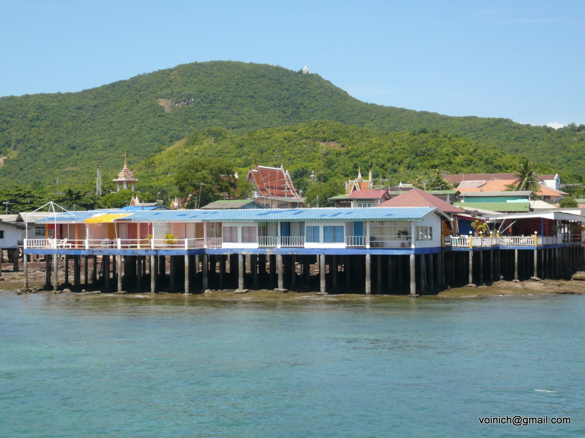
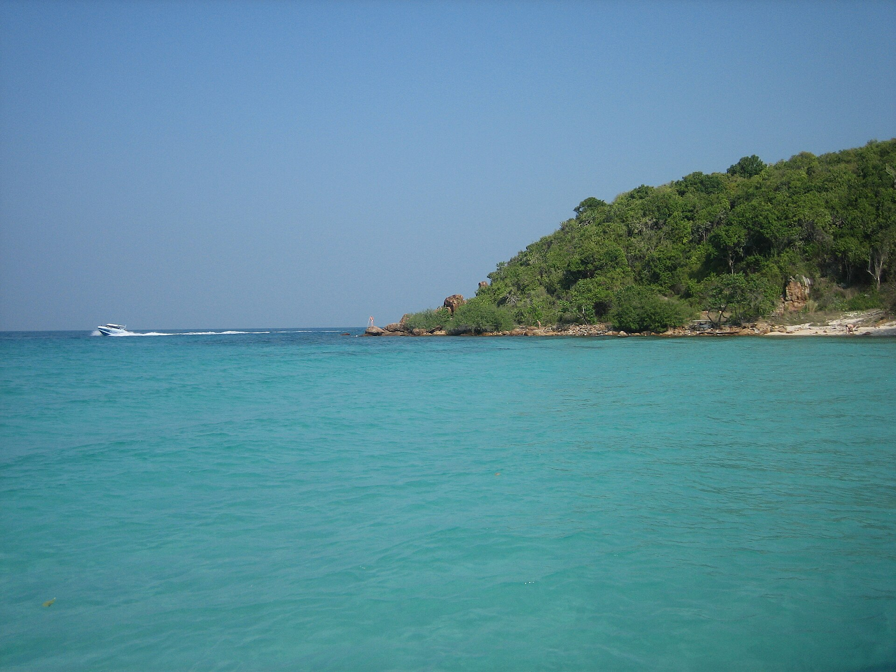
海滩边海鲜大排档，现捞现烤，人均 200-400 泰铢。推荐烤鱿鱼、泰式炒粉、新鲜椰子。
Tien Beach 或 Nual Beach 人少景美，果冻海 + 白沙 + 椰林，随手一拍都是明信片。坐 16:30 左右的船回来，不要搭末班（18:00），留够时间回酒店冲澡。⚠️ 防晒提前补涂！岛上储物柜约 50 泰铢。
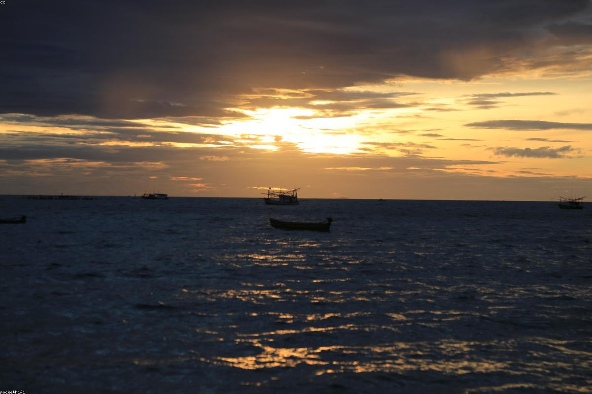
轮渡回芭提雅（约 45 分钟），Grab 回酒店，冲澡换衣服准备看秀。
Tiffany's Show 剧场在芭提雅二路（Second Road），紧邻 Terminal 21 航站楼商场，从步行街一带过去约 10-15 分钟（双条车/Grab）。沿途顺路吃个快餐果腹。
芭提雅最经典夜间表演，百老汇级别舞台灯光服装，华丽大秀无低俗感。推荐 19:30 场。门票 Klook 约 160 人民币/人（VIP 200）。🎟️ 提前 1 天 Klook 订。
散场后从二路回海滨路一带，Pattaya Beer Garden（海滨露天酒吧，一瓶啤酒约 80-130 泰铢，离酒店很近）坐一晚吹海风，或者双条车再回步行街。今晚住得近，怎么都方便。
今天是泰国最后一个完整日子，不设闹钟。起床后沿海滨路慢悠悠散步，找家咖啡馆看海发呆。在海滨路租一排沙滩椅（约 50 泰铢/张），叫几个椰子（30 泰铢/个）和冰啤酒，开始躺平。
懒得动就在酒店泳池泡一下午；想换沙滩就坐双条车去中天海滩（Jomtien Beach）——比市区人少水更干净。路边摊买个泰式炒粉 60 泰铢边走边吃。
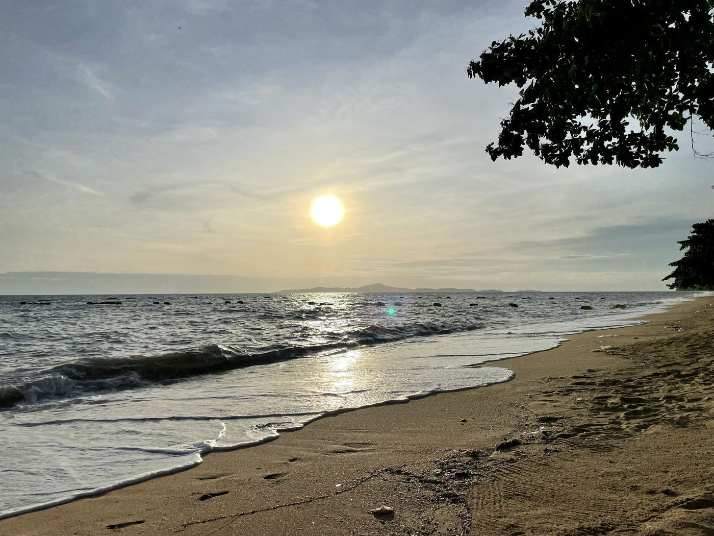
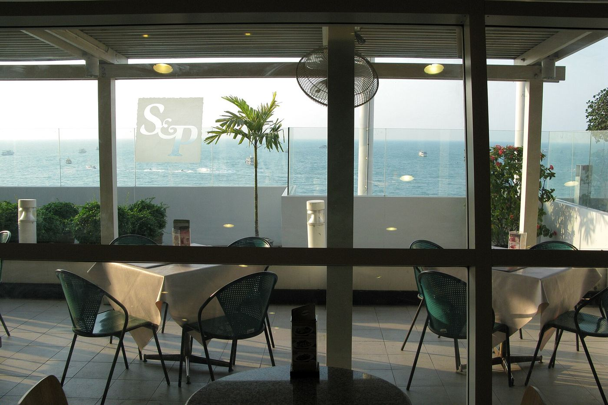
Day 4 如果没去够，可以趁下午去补。全木雕神殿，面朝大海，人少时走一圈非常宁静。
兰坡海鲜市场（Lan Pho Na Kluea Market / ตลาดลานโพธิ์นาเกลือ）是芭提雅最大、最热门的海鲜市场（Google 4.4 分/1.6 万评价），位于纳库鲁阿（Naklua），离 Holiday Inn 仅约 4 公里、驾车 11 分钟（走 Pattaya–Naklua 路，Grab 很方便）。玩法就是自己挑海鲜 → 拿到市场内/入口旁的加工店代煮，最新鲜也最划算。
💰 加工费行情：按重量或做法计，通常 20–100 泰铢/公斤（有说约 100 泰铢/公斤），按做法/每道菜单项约 20–150 泰铢；一整桌丰富的海鲜总加工费大约 300 泰铢（约 60 元人民币）。加上自购海鲜，三人一桌吃爽人均约 500–800 泰铢。
⏰ 建议时段：下午去最好，海鲜最新鲜、选择最多；越晚好货越少、部分摊收工。市场白天营业（约清晨开市），你下午或傍晚到都行，但别拖到太晚。
🧾 参考必买：手臂粗的濑尿虾、活蹦乱跳的老虎虾、现开生蚝、花蟹/青蟹、鱿鱼。三人一桌摆满，自购+加工合计约 1,500–2,400 泰铢（人均 500–800）。
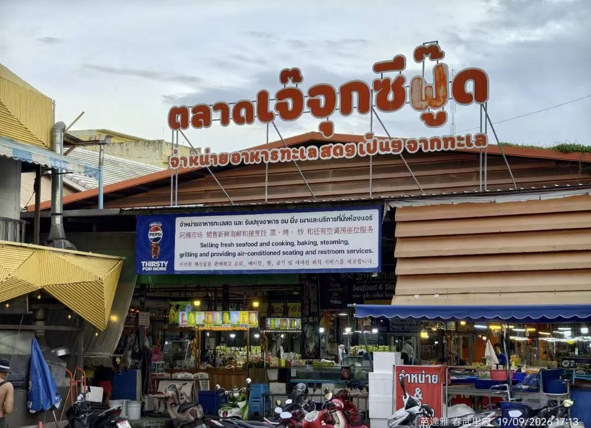
芭提雅最后一个晚上，想怎么过就怎么过。想再战 Walking Street 把没去的吧端了；想找家海鲜排档喝到老板收摊；想在海滩路买两瓶啤酒坐沙滩吹风聊人生。今晚没有计划就是最好的计划。唯一提醒：明天中午要退房回曼谷，今晚别喝太晚。
最后一天睡到自然醒，出门吃早餐（酒店不含早，海滨路米粉汤摊或 Central Festival 咖啡店）。11:00 前退房，行李全部带走，不要寄存在芭提雅（曼谷是单程，折返回来拿行李要 4 小时，不现实）。行李装车，人+行李一起回曼谷。
三人包一辆车直接回曼谷市中心（SUV/轿车约 1500-2500 泰铢/车，行李全程放车上，不再折返）。目的地导航到 CentralWorld / 原酒店 Grande Centre Point Ratchadamri 一带。找车方式同 Day4：Klook/KKday 提前订 或 Grab 现场叫。
到曼谷市中心后，先把大箱子寄存好再逛（关键，别折返！）。首选 Airporter 连锁行李寄存（泰国本地主流行李寄存 App，Siam / National Stadium / Chit Lom 商圈都有门店）：
⚠️ 兜底方案（应急用）：Siam Paragon 百货顾客服务中心可免费短存，但只收小件、限时 2-3 小时、大箱子通常拒收，你这种 24-28 寸托运箱基本指望不上，别当主力。
务必取行李再赶机——寄存点就在市中心购物区，逛完原地取件直接去机场，全程零折返。
轻装开逛 CentralWorld / Siam Paragon / Big C——就在寄存点隔壁，不用拖着行李走。
🛍️ 伴手礼清单：青草膏、鼻通、泰丝、芒果干、榴莲干、欧莱雅（泰国全球最低价之一）、Vinda 等本土零食。Big C 是买伴手礼的性价比之王，什么都有还便宜。
逛累了，市区找家正规连锁（Health Land Sathorn 或 Let's Relax）做最后一次泰式按摩，给腿回血，为红眼航班储能。
去 Silom Soi Convent 或 Siam 商圈的餐厅吃一顿像样的告别晚餐。想省事就楼上商场美食广场解决，人均 200-400 泰铢。
回寄存点（Airporter 门店）取行李，在附近大厅休息、上厕所、把护照机票拿在手上。确认行李没有缺件、护照证件在随身包里，准备出发去机场。
从市中心 Grab 去机场（约 300-400 泰铢）。02:30 起飞，建议 20:30 就出发——避开市区晚高峰，也给自己留足机场办理免税退税的时间。
到机场后：① 先托运行李、办值机 ② 过安检出境 ③ 办 VAT 退税（市区购物满 2000 泰铢，退税 7%，柜台在安检后海关处，留足时间）④ 逛 King Power 免税店，把没买齐的伴手礼补齐。
免税店逛到 00:30 左右就朝登机口去。红眼航班，登机口可能比较远，提前到。找个充电口，把手机电量充满，刷会儿手机等登机。
登机起飞，机上能睡就睡，约 4.5 小时。
落地上海（北京时间），泰国之旅圆满结束，满满的回忆和照片！
按时间从早到晚，哪些必须提前订、提前几天订
💡 一项都不落地记着：出发前把 3 张票 + 包车订好，Day4 前一天记得订悬崖餐厅，其余行程中临时订即可。
支付优先级：微信/支付宝 → 信用卡 → 现金（兜底）
⚠️ Grab 建议绑 Visa/Mastercard，支付宝绑 Grab 不稳定。
微信/支付宝可覆盖约 50–60% 支出，现金 15000 泰铢约撑到 Day5–Day6。
银联 ATM 每笔有手续费（约 150–220 泰铢），一次多取更划算。
去哪找车最安全、怎么谈才不被宰
出发前逐一确认，避免遗漏
上海 ↔ 曼谷 · 曼谷 3天 + 芭提雅 3天
以下为一人估算（单位：人民币），可根据实际调整数量
| 类别 | 项目 | 单价（元） | 数量 | 小计（元） |
|---|---|---|---|---|
| ✈️ 机票 | 上海 ↔ 曼谷 往返 | 3000 | 1 | 3000 |
| 🏨 住宿 | 曼谷酒店（3晚） | 400 | 1200 | |
| 🏨 住宿 | 芭提雅酒店（3晚） | 350 | 1050 | |
| 🍜 餐饮 | 每日三餐+零食饮料 | 150 | 1050 | |
| 🚗 交通 | 曼谷→芭提雅包车+返程 | 150 | 300 | |
| 🚗 交通 | 市内交通（BTS/地铁/Grab/双条车） | 50 | 350 | |
| 🎟️ 门票 | 郑王庙+像素大楼+真理寺+格兰岛船票 | 350 | 350 | |
| 💆 休闲 | 泰式按摩 x2次 | 150 | 300 | |
| 🏄 活动 | 格兰岛水上项目（拖曳伞等） | 200 | 200 | |
| 📱 其他 | 电话卡+签证+保险+小费+伴手礼 | 500 | 500 | |
| 人均总计（人民币） | 8300 | |||
* 以上为舒适中等档位参考价，机票和酒店旺季建议提前 2-3 个月预订。人均总预算约 7000-12000 元。
💵 现金提示：你们每人已带 5000 泰铢（约 1000 元人民币），3 人共 15000 泰铢。日常零花（餐饮、双条车、路边摊、市集、小费）用现金，大额支出（酒店、按摩、餐厅、景点门票）尽量刷卡/支付宝，现金够用且更有底气。
照着点不踩雷，都是当地主流、经久不衰的招牌
点击图片可放大查看
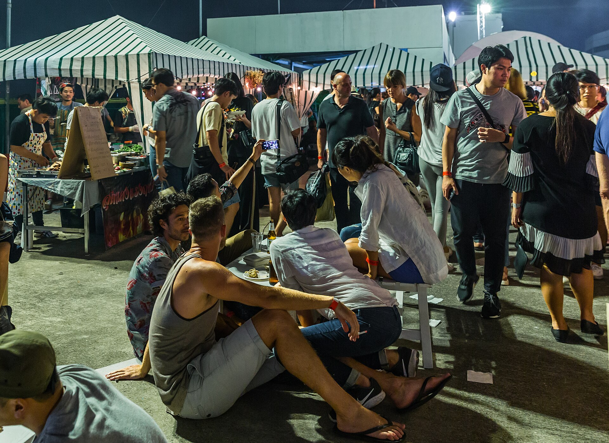
这些信息会让你的旅途更安心
点击卡片可听发音（需浏览器支持 Speech API）